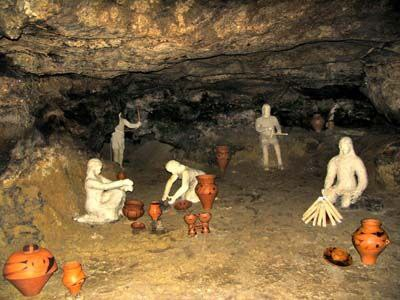
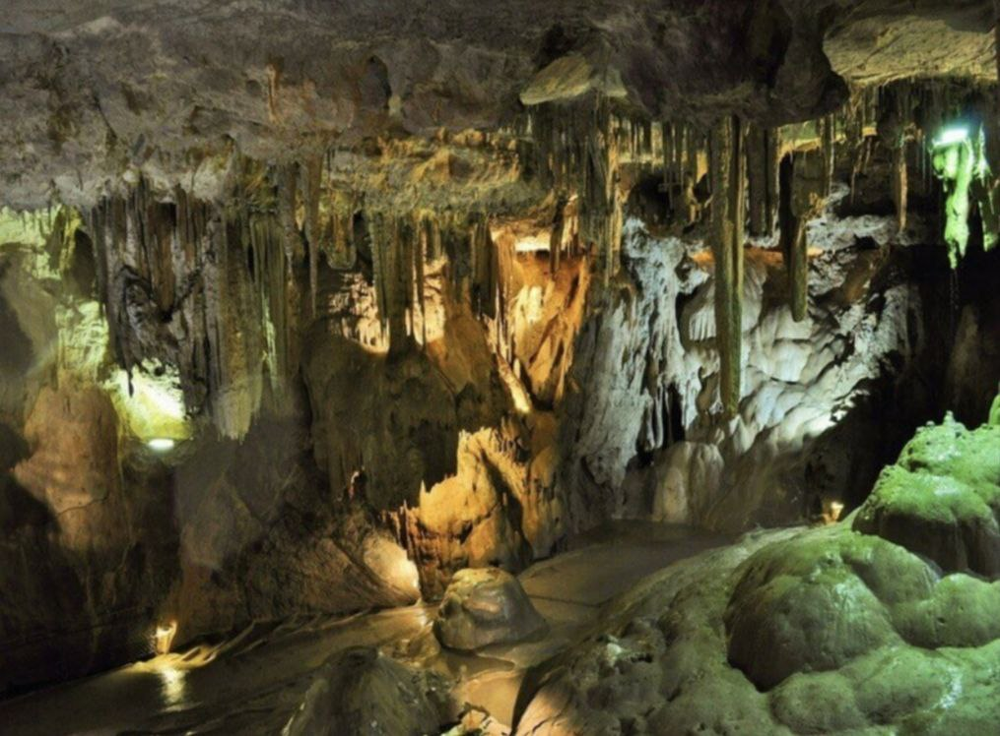
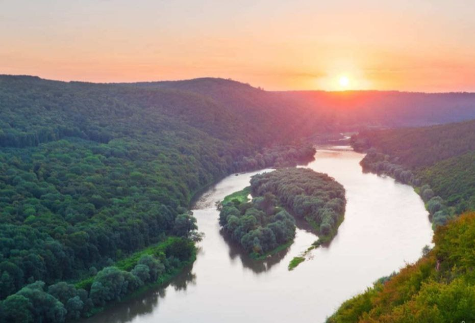
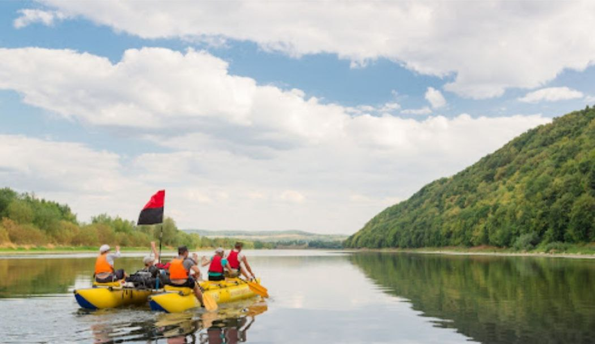
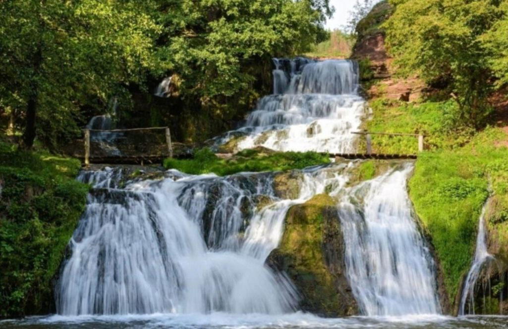

Тернопільщина — це не лише край замків і легенд. Це місце, де природа створила справжні чудеса, а мандрівники знаходять нові враження на кожному кроці
Одним із найбільш захопливих туристичних об’єктів є Оптимістична печера — найдовша гіпсова печера у світі, що простягається більш ніж на 260 кілометрів! Її лабіринти сяють кристалами, а форми стін нагадують казкові палаци. Тут проводять екскурсії різної складності — від легких маршрутів для новачків до справжніх підземних пригод для досвідчених спелеологів.




Не менш вражаючою є Дністровська каньйонна долина — один із семи природних чудес України. Подорож сюди — це можливість побачити величні скелі, водоспади, зелені береги й мальовничі села, що спускаються до самої води. Екскурсії часто включають сплави Дністром або зупинки біля стародавніх монастирів у скелях.
Обов’язково варто відвідати й Джуринський водоспад — найвищий рівнинний водоспад України (16 метрів!). Тут можна не лише насолодитися краєвидами, а й освіжитися біля прохолодної води — і зробити сотні неймовірних фото.
